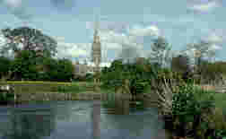
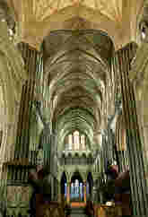

Salisbury and the Salisbury Cathedral
{sawlz'-bur-ee}

Salisbury, also called New Sarum, is
a city in Wiltshire, southern England, on the River Avon. Located about 80 mi
southwest of London, the city has a population of around 100,000. It is a commercial
and tourist center. The economic life of the city centers on cattle and poultry
marketing, brewing, printing, leatherwork, and tourism. Salisbury's principal landmark is
its cathedral. 
The Salisbury Cathedral is one of the few medieval
churches built on a previously unoccupied site. The Cathedral is very large in size.
Construction was started in 1220 and virtually completed by 1266. The monastic buildings,
including the 8-sided chapter house, were constructed slightly later, and the tower and
spire over the crossing were not completed until 1380. The church is a combination of
English and French elements. The plan is English, as is the linear emphasis of
the decoration. The broad facade masking the church behind seems to be based on French
Romanesque architecture. The increased amount of window area, as compared with the roughly
contemporary Lincoln Cathedral, suggests a knowledge of French Gothic architecture.
The plan is English, as is the linear emphasis of
the decoration. The broad facade masking the church behind seems to be based on French
Romanesque architecture. The increased amount of window area, as compared with the roughly
contemporary Lincoln Cathedral, suggests a knowledge of French Gothic architecture.